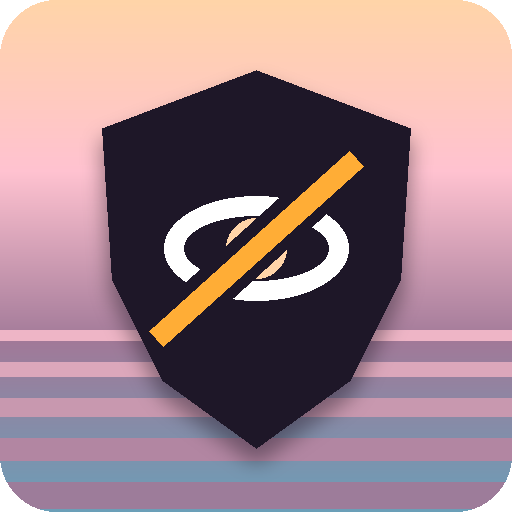

Privacy policy
No Miami Spoiler · aggiornata il 29 ottobre 2026
Italiano
No Miami Spoiler non raccoglie, non vende e non condivide nessun dato personale.
- Il testo delle pagine che visiti viene analizzato solo sul tuo computer, per decidere cosa sfocare. Non lascia mai il tuo dispositivo.
- L'AI opzionale è quella integrata in Chrome (Gemini Nano) e gira in locale. Nessun testo viene inviato a server, nostri o di altri.
- Le impostazioni (livello, parole extra, siti in pausa) sono salvate nello spazio di archiviazione del browser. Se usi la sincronizzazione del browser, il browser stesso le sincronizza tra i tuoi dispositivi.
- Ogni 6 ore l'estensione scarica da GitHub Pages un elenco di impronte di nomi (
wiki.json). È una semplice richiesta di file: non inviamo niente su di te, ma come per qualsiasi sito GitHub riceve l'indirizzo IP della richiesta. - Nessuna pubblicità, nessun tracciamento, nessun account.
English
No Miami Spoiler does not collect, sell or share any personal data.
- Page text is analysed only on your computer to decide what to blur. It never leaves your device.
- The optional AI is Chrome's built-in model (Gemini Nano) and runs locally. No text is sent to any server.
- Settings are stored in your browser's storage and synced only by your browser, if you enabled sync.
- Every 6 hours the extension downloads a list of name fingerprints (
wiki.json) from GitHub Pages. Nothing about you is sent; like any website, GitHub sees the request's IP address. - No ads, no tracking, no accounts.